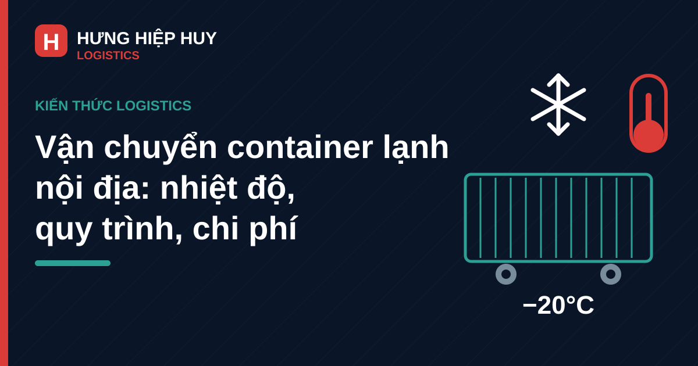

Vận chuyển container lạnh nội địa: nhiệt độ bảo quản, quy trình và chi phí

Hàng đông lạnh, thủy sản, rau quả hay dược phẩm chỉ cần lệch vài độ trong vài giờ là có thể mất trắng cả lô hàng. Khác với hàng khô, hàng lạnh không cho phép đi chậm — chuỗi lạnh phải liền mạch từ lúc đóng hàng đến lúc giao hàng. Đó là lý do vận chuyển container lạnh nội địa (container reefer) ngày càng được doanh nghiệp thực phẩm, thủy sản và nông sản chọn cho các tuyến đường dài, đặc biệt hành lang Bắc – Nam và các tuyến từ miền Trung đi các tỉnh.
Bài viết giải thích container lạnh hoạt động ra sao, nhiệt độ bảo quản cho từng nhóm hàng, quy trình vận chuyển thực tế và những yếu tố quyết định cước phí — để chủ hàng chọn đúng phương án và tránh những rủi ro đắt giá nhất của hàng lạnh.
1. Container lạnh (reefer) là gì, khác container thường ở điểm nào?
Container lạnh là container có gắn máy lạnh chạy điện và lớp cách nhiệt dày, duy trì nhiệt độ cài đặt suốt hành trình (khoảng −30°C đến +30°C tùy loại máy). Trên đường, máy lạnh chạy bằng máy phát (genset) trên xe đầu kéo; tại cảng hoặc kho, container được cắm điện lưới tại vị trí có ổ cắm reefer.
Điểm khác biệt cốt lõi so với container thường:
- Duy trì nhiệt độ, không chỉ che chắn: container thường chỉ bảo vệ hàng khỏi mưa nắng và va đập; container lạnh chủ động giữ nhiệt độ ổn định, có quạt đối lưu để khí lạnh phân bổ đều khắp container.
- Cần nguồn điện liên tục: chỉ cần mất điện vài giờ, nhiệt độ trong cont có thể tăng và làm hỏng hàng — vì vậy khâu cấp điện tại kho, cảng và trên xe là sống còn.
- Cần làm lạnh trước (pre-cooling): container phải được chạy máy trước để đạt đúng nhiệt độ cài đặt rồi mới đóng hàng. Đóng hàng vào container còn nóng là một trong những lỗi phổ biến nhất khiến hàng bị giảm chất lượng ngay từ đầu.
- Ghi nhật ký nhiệt độ: máy lạnh reefer ghi lại nhiệt độ theo thời gian, làm căn cứ kiểm tra khi có tranh chấp về chất lượng hàng.
Container lạnh phổ biến nhất vẫn là loại 20ft và 40ft (thường là 40HC để tăng thể tích). Xem thêm cách phân biệt container 20ft, 40ft và 40HC để chọn đúng loại.
2. Nhiệt độ bảo quản theo từng nhóm hàng thường gặp
Mỗi nhóm hàng có một khoảng nhiệt độ an toàn riêng. Cài sai vài độ cũng có thể gây hỏng hàng: hàng đông lạnh rã đông rồi đông lại sẽ mất chất lượng, rau quả để quá lạnh sẽ bị cháy lạnh (chilling injury).
| Nhóm hàng | Nhiệt độ bảo quản phổ biến | Lưu ý |
|---|---|---|
| Hàng đông lạnh (thủy sản, thịt đông lạnh) | −25°C đến −18°C | Phải giữ đông cứng liên tục, không để rã đông giữa đường |
| Kem, sản phẩm sữa đông lạnh | −25°C đến −20°C | Rất nhạy với dao động nhiệt độ |
| Hàng mát (sữa, thịt mát, thực phẩm chế biến) | 0°C đến 4°C | Cần lạnh ổn định, không để đóng băng |
| Rau, quả tươi | 2°C đến 13°C tùy loại | Mỗi loại quả có ngưỡng riêng; chuối, xoài sợ lạnh dưới ~10–13°C |
| Dược phẩm, vắc-xin | 2°C đến 8°C (phổ biến) | Yêu cầu khắt khe nhất, cần nhật ký nhiệt độ đầy đủ |
| Hoa tươi | 0°C đến 2°C | Rất nhạy, thời gian vận chuyển càng ngắn càng tốt |
Lưu ý quan trọng: bảng trên là khoảng nhiệt độ tham khảo chung theo tập quán vận chuyển hàng lạnh. Nhiệt độ thực tế phải theo yêu cầu của nhà sản xuất hoặc tiêu chuẩn của từng mặt hàng — chủ hàng nên cung cấp nhiệt độ cài đặt chính xác cho đơn vị vận chuyển bằng văn bản trước khi đóng hàng.
Một nguyên tắc nữa: container lạnh giữ nhiệt độ, không làm lạnh hàng. Hàng phải được làm lạnh đến đúng nhiệt độ trước khi đóng vào container — đóng hàng còn ấm vừa làm máy lạnh quá tải, vừa khiến hàng lâu đạt nhiệt độ an toàn.
3. Quy trình vận chuyển container lạnh nội địa, từ đóng hàng đến giao hàng
Một chuyến container lạnh nội địa thường đi qua các bước sau:
- Tiếp nhận yêu cầu, chốt nhiệt độ và lịch trình: chủ hàng cung cấp loại hàng, khối lượng, nhiệt độ yêu cầu, địa chỉ lấy và giao hàng. Đơn vị vận chuyển xác nhận loại container lạnh phù hợp và lịch xe.
- Làm lạnh trước container (pre-cooling): container được chạy máy trước đến đúng nhiệt độ cài đặt, kiểm tra máy lạnh và gioăng cửa. Chỉ khi nhiệt độ đã ổn định mới bắt đầu đóng hàng.
- Đóng hàng tại kho: hàng đã làm lạnh sẵn được xếp vào container, chừa khe hở cho khí lạnh lưu thông — xếp kín đặc, chặn cửa gió sẽ làm khí lạnh không đều. Đóng kín cửa, kẹp seal, máy lạnh chạy liên tục ngay từ lúc này.
- Vận chuyển: xe đầu kéo chở container lạnh chạy theo tuyến, máy phát điện (genset) cấp điện liên tục cho máy lạnh. Tài xế và điều vận theo dõi nhiệt độ định kỳ; tuyến dài có điểm dừng kiểm tra máy và nhiên liệu genset.
- Giao hàng, kiểm tra nhiệt độ: đến nơi, hai bên kiểm tra nhiệt độ trong container và tình trạng hàng trước khi dỡ. Nhật ký nhiệt độ của máy lạnh là căn cứ xác nhận chuỗi lạnh có bị gián đoạn hay không.
Xem thêm quy trình vận chuyển container nội địa từ cảng Đà Nẵng đi các tỉnh để hình dung toàn bộ hành trình.
4. Những rủi ro thường gặp và cách kiểm soát độ lạnh trên đường
Các rủi ro thường gặp nhất của hàng lạnh:
- Mất điện, hết nhiên liệu genset: máy lạnh dừng là nhiệt độ tăng ngay. Cách phòng: kiểm tra nhiên liệu genset trước mỗi chuyến và có máy phát dự phòng trên tuyến dài.
- Đóng hàng chưa đủ lạnh: hàng còn ấm đóng vào cont sẽ không kịp lạnh. Cách phòng: làm lạnh hàng trước và kiểm tra nhiệt độ tâm sản phẩm trước khi đóng.
- Xếp hàng chặn luồng gió: hàng xếp kín sát trần, sát cửa gió làm khí lạnh không lưu thông. Cách phòng: chừa khoảng trống cho luồng gió hồi về máy lạnh.
- Mở cửa container giữa đường: mỗi lần mở cửa là khí nóng tràn vào. Cách phòng: hạn chế mở cửa; nếu bắt buộc kiểm tra, mở nhanh, đóng ngay.
- Chờ đợi tại cảng, kho không có điện reefer: container nằm chờ không cắm điện sẽ nhanh chóng mất nhiệt. Cách phòng: chọn cảng, kho có vị trí cắm điện reefer. Đơn vị có kho bãi container tại Đà Nẵng với hạ tầng điện reefer là lợi thế lớn với hàng lạnh đi/đến miền Trung.
Lưu ý về trách nhiệm: khi nhận hàng lạnh, người nhận nên kiểm tra và ghi lại nhiệt độ ngay lúc mở cửa container, trước khi dỡ hàng — cùng nhật ký nhiệt độ của máy lạnh, đây là căn cứ quan trọng nhất nếu phát sinh khiếu nại.
5. Cước vận chuyển container lạnh gồm những gì?
Cước container lạnh cao hơn container thường vì thêm chi phí máy lạnh, nhiên liệu genset và yêu cầu vận hành khắt khe hơn. Các thành phần chính:
- Cước vận chuyển cơ bản: tính theo container/chuyến, theo tuyến — tương tự container thường. Xem thêm cách tính cước vận chuyển container nội địa và các yếu tố ảnh hưởng.
- Phí máy lạnh và nhiên liệu genset: chi phí chạy máy lạnh suốt hành trình, tính theo thời gian chạy máy hoặc theo chuyến; tuyến càng dài khoản này càng lớn.
- Phí pre-cooling và cắm điện tại cảng/kho: phí làm lạnh trước container và phí cắm điện reefer trong thời gian container chờ tại cảng hoặc kho.
- Phí lưu container, lưu bãi: nếu đóng/dỡ hàng chậm, container lạnh vẫn phải chạy máy trong lúc chờ — phí lưu cont lạnh thường cao hơn cont thường vì tốn điện và nhiên liệu.
- Phí bảo hiểm hàng hóa: nên mua với hàng lạnh giá trị cao, vì rủi ro đứt chuỗi lạnh là rủi ro đặc thù mà bảo hiểm thông thường chưa chắc bao quát hết — cần đọc kỹ điều khoản.
Mẹo thực tế: khi so sánh báo giá container lạnh, đừng chỉ so cước chuyến. Hãy yêu cầu báo giá trọn gói gồm phí genset, phí pre-cooling, phí cắm điện và thời gian miễn phí lưu cont — đây là những khoản dễ đội lên nhất nếu không thỏa thuận rõ từ đầu. Đồng thời, chủ hàng nên hỏi rõ phương án xử lý khi xe gặp sự cố dọc đường: đơn vị có xe cứu hộ, máy phát dự phòng hay điểm trung chuyển lạnh trên tuyến hay không.
6. Kinh nghiệm chọn đơn vị vận chuyển container lạnh
Khi chọn đơn vị vận chuyển container lạnh, chủ hàng nên kiểm tra:
- Có đội xe và container lạnh thực, chạy tuyến thường xuyên: đơn vị sở hữu xe đầu kéo, container lạnh và chạy đều tuyến bạn cần sẽ kiểm soát được lịch trình và xử lý sự cố tốt hơn đơn vị chỉ làm trung gian. Tham khảo thêm kinh nghiệm chọn nhà vận chuyển container nội địa.
- Quy trình pre-cooling và kiểm tra máy rõ ràng: đơn vị uy tín luôn chạy máy trước, kiểm tra máy lạnh và ghi nhận nhiệt độ trước khi đóng hàng — chứ không đóng hàng rồi mới bật máy.
- Theo dõi nhiệt độ trong suốt hành trình: có người theo dõi và cảnh báo khi nhiệt độ lệch khỏi ngưỡng cài đặt, thay vì chỉ phát hiện khi hàng đã đến nơi.
- Có hạ tầng kho, bãi hỗ trợ reefer: kho có vị trí cắm điện reefer giúp container lạnh không bị gián đoạn chuỗi lạnh trong lúc chờ đóng/dỡ hàng.
- Hợp đồng ghi rõ nhiệt độ, trách nhiệm và đền bù: nhiệt độ cài đặt, thời gian giao hàng, trách nhiệm khi đứt chuỗi lạnh và mức đền bù phải được ghi bằng văn bản — đây là căn cứ duy nhất khi xảy ra tranh chấp.
7. Kết luận
Vận chuyển container lạnh nội địa là giải pháp phù hợp nhất cho hàng cần giữ nhiệt độ ổn định trên tuyến đường dài: thủy sản, thực phẩm đông lạnh, rau quả, dược phẩm và nông sản giá trị cao. Chìa khóa nằm ở ba điểm: cài đúng nhiệt độ từng nhóm hàng, giữ chuỗi lạnh liền mạch từ lúc đóng hàng đến lúc giao hàng, và thỏa thuận rõ mọi khoản phí máy lạnh ngay từ đầu.
Hưng Hiệp Huy Logistics chuyên vận chuyển container nội địa với trọng tâm là các tuyến từ Đà Nẵng đi các tỉnh và hành lang Bắc – Nam, cùng dịch vụ kho bãi container tại Đà Nẵng và khai báo hải quan. Dù hàng khô hay hàng lạnh cần giữ nhiệt độ nghiêm ngặt, chúng tôi đều có phương án phù hợp. Liên hệ để được tư vấn và báo giá chi tiết:
Cần báo giá vận chuyển container lạnh nội địa?
Liên hệ Hưng Hiệp Huy Logistics — Hotline/Zalo: 0901 995 665 — Email: hiepnguyen.hunghiephuy@gmail.com — Địa chỉ: 756 Ngô Quyền, Đà Nẵng. Xem thêm các dịch vụ vận chuyển của chúng tôi.
Bài viết liên quan: Container 20ft, 40ft và 40HC: khác nhau thế nào, chọn loại nào? · Vận chuyển container nội địa từ cảng Đà Nẵng đi các tỉnh · Cước vận chuyển container nội địa: cách tính và các yếu tố ảnh hưởng